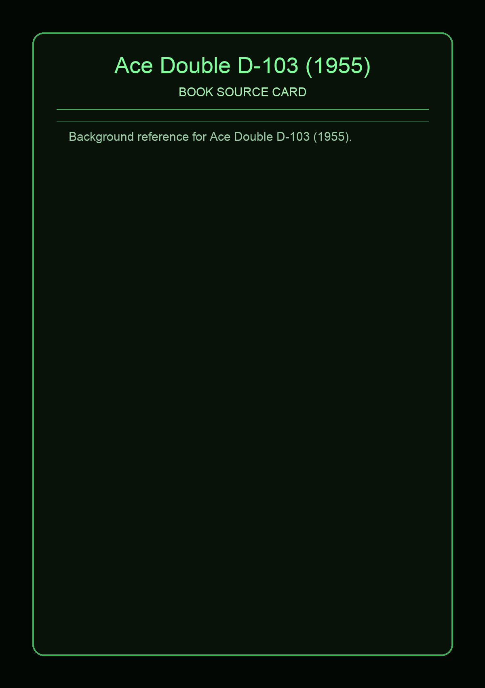

Ace Double D-103 (1955)
Source Card

A-side: Solar Lottery (Philip K. Dick). B-side: The Big Jump (Leigh Brackett). This Ace code uses the dos-a-dos format, so each narrative gets its own front-cover orientation in one physical paperback [1][2].
D-103 is a strong "systems + expedition" pairing. Solar Lottery follows Ted Benteley in a society where leadership and assassination are both lottery-driven, with Quizmaster politics tied to Reese Verrick and Leon Cartwright [3].
Covers and Context


The Big Jump moves to interstellar mystery: Arch Comyn investigates the first Barnard's Star mission after Ballantyne returns altered and Paul Rogers is missing, pushing the book toward a rescue-and-truth structure [4]. The D-103 pairing is explicitly documented in Ace records [1][2].
External Links
Facts are synthesized in original wording from direct references listed above.